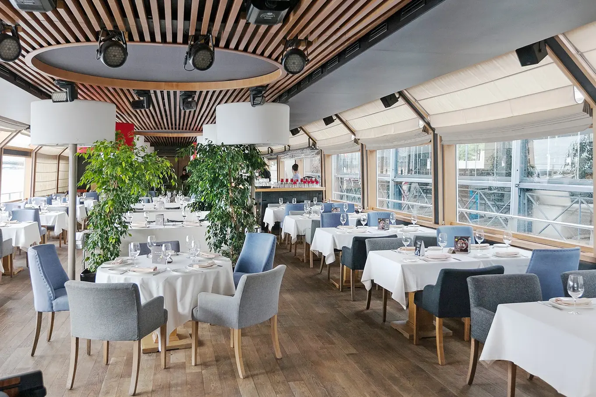

Озвучивание ресторанов и кафе
Фоновая музыка в ресторанах и кафе создаёт приятную атмосферу, способствующую комфортному отдыху гостей. Звуковое сопровождение дополняет гастрономический опыт, позволяя посетителям в полной мере насладиться блюдами и напитками. При этом стиль и темп музыки могут варьироваться в зависимости от времени дня, а громкость - адаптироваться под разные зоны заведения.
Выбрать формат